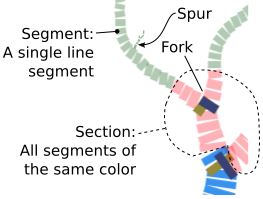

Draw a Tree
& Edit Its Properties
Your browser does not support the HTML canvas tag.
Redraw
Tree Type:
Default
Basic
Simple
Savana
Poplar
Edit Mode
Select a tree section to edit:

Green
Red
Blue
Trunk
Section attibutes:
Slider definitions appear here...
Starting Thickness:
2
Rate of Taper:
5
range:0.02 - 3
Length of Segment:
10
range:1 - 20
Rand
Length of Segment:
1
range:0 - 10
Rand
Segment Angle:
10
range:0 - 10
Fork Angle:
10
range:1 - 50
Rand
Fork Angle:
10
range:1 - 10
Rise Angle:
10
range:0 - 0.50
Fork Frequency:
2
range:1 - 20
Rand
Fork Frequency:
2
range:0 - 10
Spur Frequency:
2
range:0 - 5
Section Thickness:
2
range:1 - 100
Current settings for the whole tree:
Tree Output...